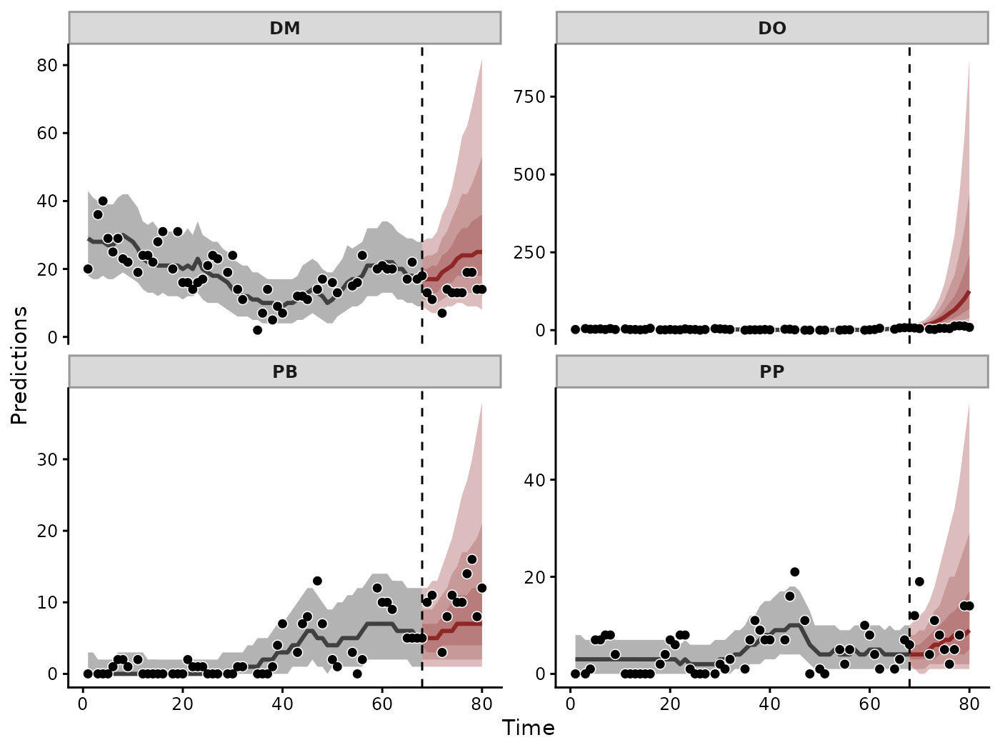
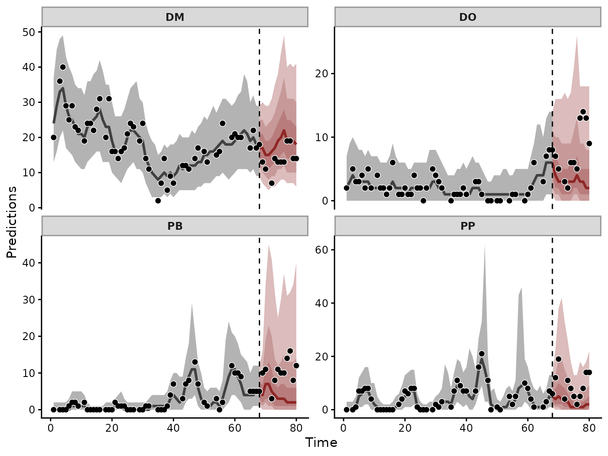
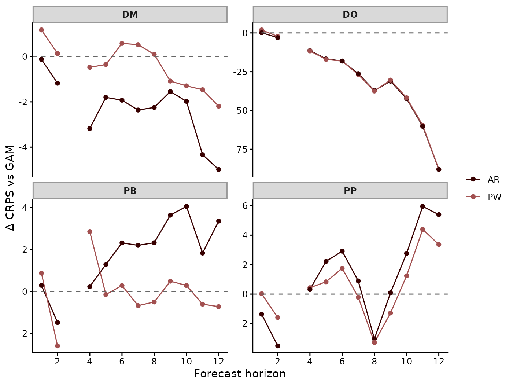
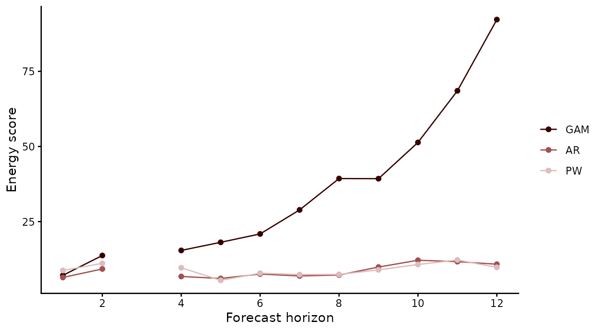
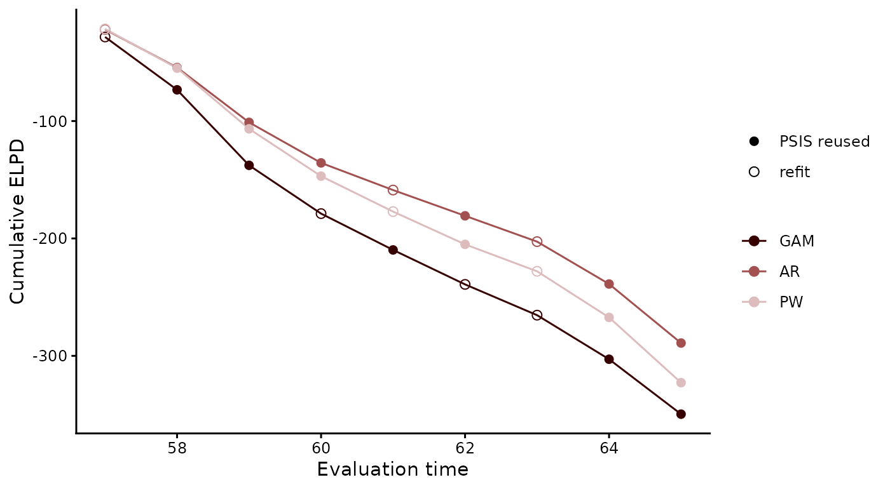

Forecast evaluation in mvgam
Nicholas J Clark
2026-10-28
Source:vignettes/articles/forecast_evaluation.Rmd
forecast_evaluation.RmdA model that describes its training data well can still forecast poorly. To find the model that forecasts best, mvgam scores each candidate’s predictive distribution against observations the model did not see. Every scoring rule used here is proper, in the sense that the true predictive distribution minimises its expected value (Gneiting and Raftery 2007). Lower scores are better.
This article compares three models of monthly rodent captures, each with a different trend. We score their forecasts of a twelve-month holdout, repeat the comparison over rolling forecast origins and combine the models into a weighted ensemble.
The data
portal_data holds captures of four desert rodents at the
Portal Project site in southeastern Arizona, summed over the control
plots in each lunar month (Portal
Project methods). The series are Dipodomys merriami (DM),
Dipodomys ordii (DO), Chaetodipus baileyi (PB) and
Chaetodipus penicillatus (PP). Two covariates accompany them:
the monthly mean of minimum temperature (mintemp) and a
12-month moving average of NDVI (ndvi_ma12). We hold out
the last 12 of the 80 months:
Three models
To isolate how the trend shapes a forecast, the three models share a
Poisson observation model, the two covariates and the sampler settings.
Each fit receives the holdout as newdata, from which
forecast() later takes its forecast times:
fit_portal <- function(formula, trend_formula = NULL) {
mvgam(formula, trend_formula = trend_formula, family = poisson(),
data = train, newdata = test, chains = 4, seed = 2026,
silent = 2)
}The first model is a generalised additive model with a smooth of time for each species. Its forecast extends those smooths past the last training month:
mod_gam <- fit_portal(
captures ~ series + s(mintemp, k = 6) + s(ndvi_ma12, k = 6) +
s(time, by = series, k = 8)
)The second model gives each species a latent AR(1) state. Its
covariates move into trend_formula, where
by = lv_axis() gives each species its own smooth of
temperature. AR(cor = TRUE) correlates the innovations of
the four states:
mod_ar <- fit_portal(
captures ~ series,
trend_formula = ~ s(mintemp, by = lv_axis(), k = 6) +
s(ndvi_ma12, k = 6) + AR(cor = TRUE)
)The third model replaces the AR(1) state with a piecewise linear trend. Up to six changepoints per species fall in the first 80% of the training months. As in Prophet (Taylor and Letham 2018), the forecast extends the final segment and adds new changepoints at the rate seen in training:
Forecasts
forecast() returns the predictive distribution of the
captures in each held-out month. Its plot() method draws
the forecast after the hindcast of the training months:
plot(fc_gam)
GAM hindcasts and forecasts of each species’ captures, with 50%, 80% and 95% credible intervals on the forecast. Points are the observed captures. The dashed line marks the end of the training data.
Each smooth of time extrapolates the slope at the end of its series. For DO, whose captures rose over the final training months, the median forecast reaches 127 captures by month 12. The held-out months recorded at most 14. The AR forecast carries its latent state forward instead:
plot(fc_ar)
AR hindcasts and forecasts of each species’ captures.
Scoring the holdout
compare_scores() scores several forecasts with one rule
and returns one row per model, series and horizon. The continuous ranked
probability score (CRPS) generalises the absolute error to a predictive
distribution. With relative, plot() draws each
model’s score minus that of a baseline:
crps <- compare_scores(fc_gam, fc_ar, fc_pw, score = "crps",
model_names = c("GAM", "AR", "PW"))
plot(crps, relative = "GAM")
CRPS of the AR and PW forecasts minus that of the GAM at each horizon. Negative values favour the AR or PW model. No species was observed at horizon 3.
Between AR and the GAM, the lower mean CRPS goes to AR on DM, AR on DO, the GAM on PB and the GAM on PP. On DO the mean CRPS is 3.32 for AR and 33.48 for the GAM. PB and PP recorded few or no captures over long stretches. Averaged over the species, AR scores 3.96 against 3.85 for PW.
The energy score grades the four forecasts at each horizon as one
multivariate distribution (Gneiting et al. 2008).
compare_scores() holds a joint score in the rows whose
series is all_series:
energy <- compare_scores(fc_gam, fc_ar, fc_pw, score = "energy",
model_names = c("GAM", "AR", "PW"))
plot(energy)
Energy score of the joint forecast of the four species at each horizon.
The GAM’s energy score runs from 7 to 92 over the twelve months. AR
and PW stay below 13. score() offers nine more rules, among
them the variogram score for the dependence between series and
threshold-weighted scores for a range of the response.
Rolling forecast origins
The holdout scores one twelve-month forecast from one origin. To test
whether the ranking holds across origins, lfo_cv() runs
approximate leave-future-out cross-validation (Bürkner et al. 2020). Starting
from the first min_t months, it forecasts the
fc_horizon months that follow each origin in turn. It
scores each forecast by its expected log predictive density (ELPD).
Pareto-smoothed importance sampling reweights the existing fit to each
new origin. The model is refit only where the Pareto
diagnostic crosses its threshold. Leave-one-out cross-validation with
loo() suits these models poorly. A latent state that the
neighbouring months still inform predicts each left-out month, which
turns the comparison into one of interpolation.
save_log_lik = TRUE keeps the pointwise log densities
that the stacking weights below require:
run_lfo <- function(mod) {
lfo_cv(mod, min_t = 56, fc_horizon = 4, save_log_lik = TRUE,
silent = 2)
}
lfo_gam <- run_lfo(mod_gam)
lfo_ar <- run_lfo(mod_ar)
lfo_pw <- run_lfo(mod_pw)
loo_compare(lfo_gam, lfo_ar, lfo_pw, model_names = c("GAM", "AR", "PW"))
#> model elpd_diff se_diff p_worse diag_diff diag_elpd
#> AR 0.0 0.0 NA
#> PW -33.7 8.0 1.00 N < 100
#> GAM -60.6 18.2 1.00 N < 100AR leads. PW trails it by 34 (SE 8) and GAM by 61 (SE 18). The log
score penalises an observation in the tail of a forecast far more
heavily than the CRPS does. compare_elpds() tabulates the
ELPD at each origin:
elpds <- compare_elpds(lfo_gam, lfo_ar, lfo_pw,
model_names = c("GAM", "AR", "PW"))
plot(elpds, cumulative = TRUE)
Cumulative ELPD over the forecast origins. Open circles mark the origins at which the model was refit.
A weighted ensemble
Stacking chooses the weights that maximise the log score of the
mixture of the models’ predictive distributions (Yao et al. 2018).
loo_model_weights() computes them from the leave-future-out
densities. ensemble() combines the forecasts in those
proportions. compare_scores() then scores the ensemble with
its components:
weights <- loo_model_weights(lfo_gam, lfo_ar, lfo_pw, method = "stacking",
model_names = c("GAM", "AR", "PW"))
weights
#> Method: stacking
#> ------
#> weight
#> GAM 0.000
#> AR 0.662
#> PW 0.338
fc_ens <- ensemble(fc_gam, fc_ar, fc_pw, weights = as.numeric(weights),
seed = 2026)
crps_ens <- compare_scores(fc_gam, fc_ar, fc_pw, fc_ens, score = "crps",
model_names = c("GAM", "AR", "PW", "Ensemble"))
aggregate(score ~ model, FUN = mean,
data = subset(crps_ens, series != "all_series"))
#> model score
#> 1 GAM 11.263629
#> 2 AR 3.964813
#> 3 PW 3.853224
#> 4 Ensemble 3.797325Stacking gives 0 to the GAM, 0.66 to AR and 0.34 to PW. The ensemble’s mean CRPS on the holdout is 3.80, the lowest of the four.
Summary
The CRPS and the energy score compared the three forecasts on the holdout. Under leave-future-out cross-validation AR led in ELPD. The GAM’s smooths of time extrapolated the end of each series. Stacking combined the three forecasts into an ensemble with a mean CRPS of 3.80. Each step took one or two function calls on the fitted models. The CRPS and the log score can rank models differently. Choose the scoring rule before scoring any forecast.
Where to next
Each function used here has a help page, such as ?score
or ?lfo_cv, with its arguments and output.
how_to_cite() writes a methods paragraph for each fitted
model. methods_md() writes out its equations.
Related articles:
- Vector autoregressions model the lagged effects of one species on another.
- Hierarchical vector autoregressions pool dynamics across groups of series.
- N-mixture models forecast abundance from counts with imperfect detection.
References
Bürkner P-C, Gabry J and Vehtari A (2020). Approximate leave-future-out cross-validation for Bayesian time series models. Journal of Statistical Computation and Simulation 90(14), 2499-2523. doi:10.1080/00949655.2020.1783262
Gneiting T and Raftery AE (2007). Strictly proper scoring rules, prediction, and estimation. Journal of the American Statistical Association 102(477), 359-378. doi:10.1198/016214506000001437
Gneiting T, Stanberry LI, Grimit EP, Held L and Johnson NA (2008). Assessing probabilistic forecasts of multivariate quantities, with an application to ensemble predictions of surface winds. TEST 17(2), 211-235. doi:10.1007/s11749-008-0114-x
Taylor SJ and Letham B (2018). Forecasting at scale. The American Statistician 72(1), 37-45. doi:10.1080/00031305.2017.1380080
Yao Y, Vehtari A, Simpson D and Gelman A (2018). Using stacking to average Bayesian predictive distributions. Bayesian Analysis 13(3), 917-1003. doi:10.1214/17-BA1091